Star Wars Inspired Hologram Shader and Blueprint System
源地址：https://deepspacebanana.github.io/deepspacebanana.github.io/

I wanted to do this little shader because I had been watching a lot of the The Clone Wars animated show lately, and I wanted to recreate the holograms from the show, I really like the iconic star wars hologram effect, it’s very simple yet effective.
I decided to try and make my system easily re-usable within a game development context, so I created a blueprint system to encapsulate the hologram system, which lets you assign any asset you want to be shown as a hologram. The Majority of the effect is handled by two shaders, and the blueprint setup is a convenient way to make the system re-usable as a game object.
Note: You can open the images in a new tab to view them at a higher resolution

Setup
The system makes use of two meshes:
Base Cylinder

The base cylinder is jsut a cylinder with no caps, and the pivot aligned to the bottom center(This is important). We use this as the hologram base projection, using a shader we will reshape it an animate it.
Hologram Asset
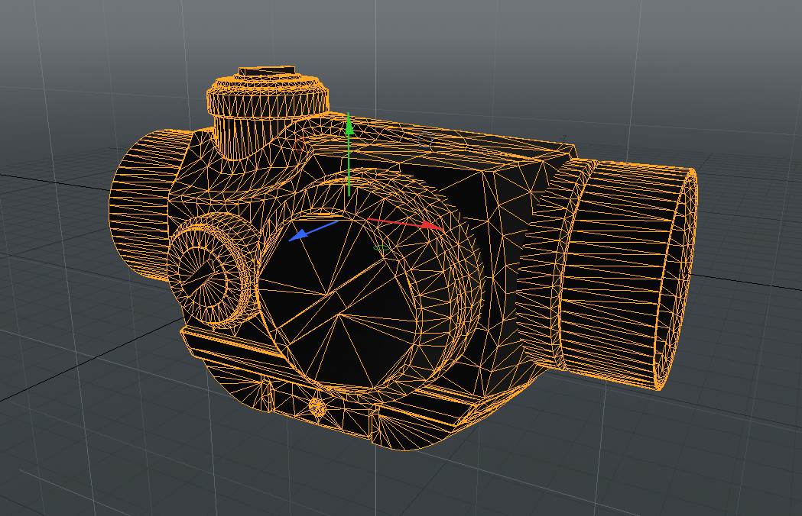
This can be any asset, in my case I’m using a scope I modelled a while back as my asset.
Each of these objects will get a unique shader with similar look-dev and some shared parameters so that they work together.
Setting up the Parameter Collection
First we setup an MPC for the shared parameters
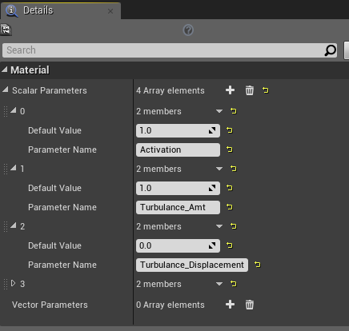
- Activation:Scalar parameter that controls the hologram’s on/off status.
- Turbulance_Amt:Scalar parameter that controls how much turbulance/distortion affects the hologram.
- Turbulance_Displacement:Scalar parameter that controls the amount of dispalcement in the turbulance.
Hologram Shader 1: Assigned to Cylinder Mesh
Generate Z-Gradient to drive Scaling of the mesh in the shader, for activation/deactivation.
Node Network to generate z-gradient
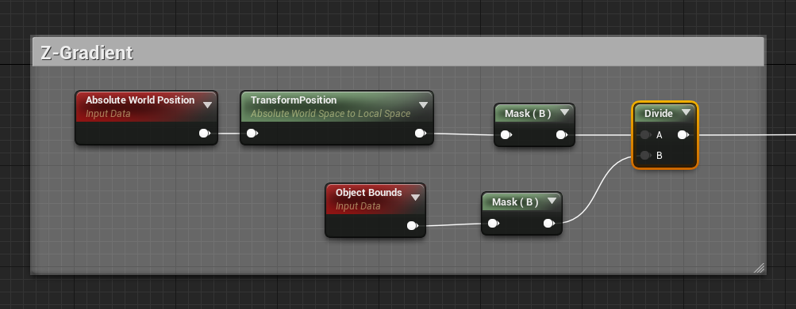
Node Network to control scaling/Expansion
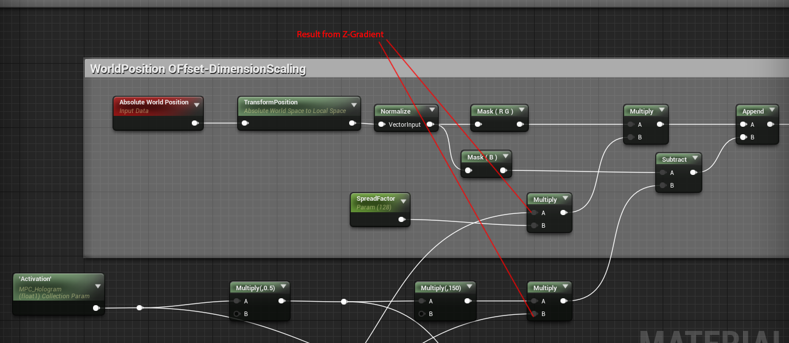
The result from the z-gradient is used to drive the WorldPosition offset logic that controls the height and expansion of the cylinder.
The Activation parameter is a scalar value that controls the height of the cylinder (0 = squished, 1 = fully expanded height)
The spreadfactor parameter is a scalar value that controls the radius spread of the top part of the cylinder(Ths is in world units)
You can see the result from tweaking these two parameters below

Adding Turbulance to WorldPosition Offset for Glitchiness
Next we generate psuedorandom noise in screen space and use it to add some Turbulance to the WorldPosition Offset to create some glitchiness. The setup is shown below
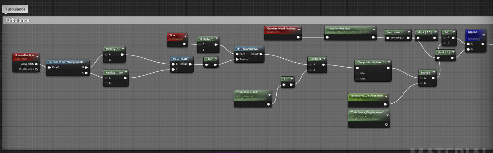
TurbulanceAmt is a scalar parameter that controls how much turbulance is present(0=no turbulance, 1 = full turbulance)
Turbulance_Dispalcement controls how extreme the dispalcement is.(This value is in world units)
The result from this gets added to the resut from Scaling/Expansion and that creates teh final output for the WorldPositionOffset of the Shader.
ScreenSpace 2D Noise Visualized
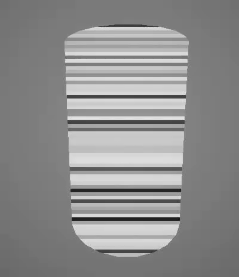
Final WorldPositionOffset Result
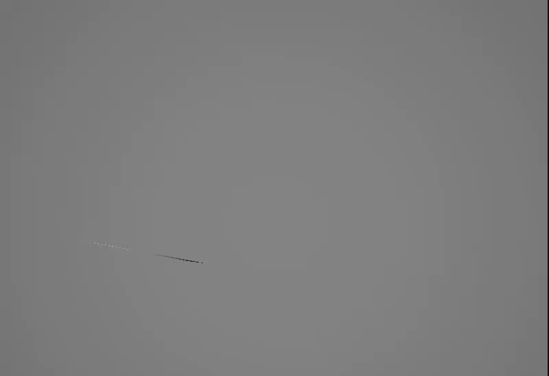
It looks weird now, but once we add the look-dev, it works quite well
Look Development
Screen Space Parallel Bars
We use a little bit of UV math to create screen space panning parallel bars, we also do some math with the camera position and object position to make sure that the screen space bar’s continue tiling consistently regardless of distance from the screen
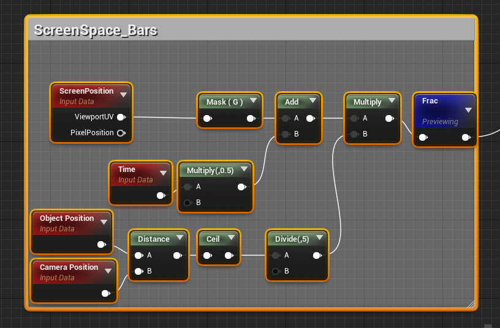
If you preview the result from this network, it will look like this(I preview it by wiring it into the basecolor,opacity and emissive)
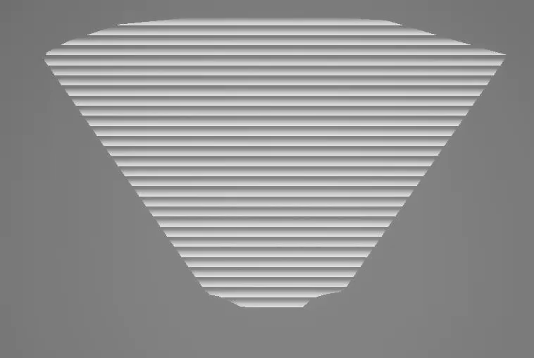
Fresnel and CameraFade
Next we setup a fresnel and CameraFade that will later be used to drive the opacity.
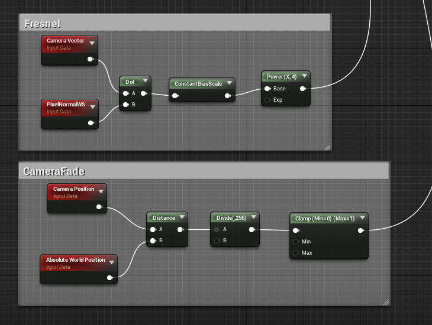
Fresnel Result
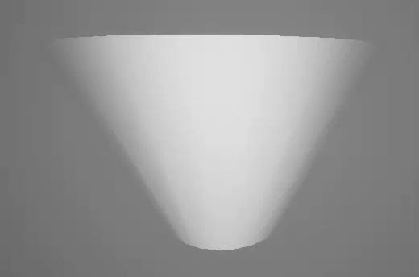
CameraFade Result
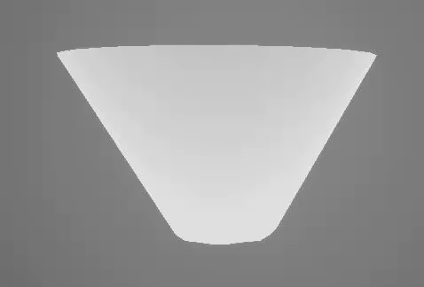
Color and Opacity
Next we create the main graph network for the color, Emissive and Opacity, this is driven primarily by the result from the z-gradient and Activation Parameter, I combine it with the results from ScreenSpace bars, Fresnel and CameraFade for the final color,Emissive and Opacity.
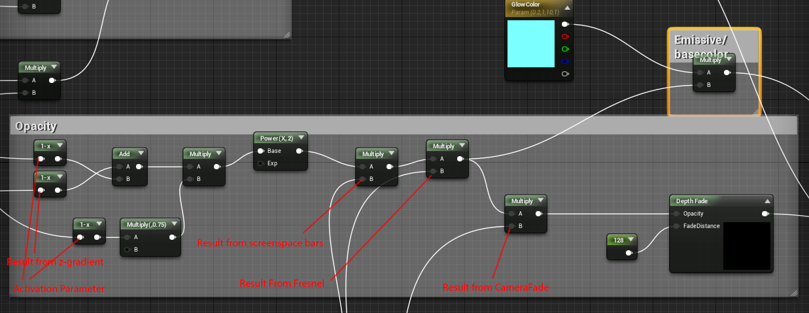
The result from the DepthFade(DepthFade is to prevent hard clips through geometry) node goes into Opacity, and the result from the color multiply drives the emissive and the base color.
The end result is this, with parameters to control activation,turbulance and spread.

Hologram Shader 2: Assigned to Game Mesh
This shader will be pretty identical to the previous one assigned to the cylinder but with a few changes so that it works with complex meshes
WorldPosition Offset Setup for Activation
The setup below controls the scaling and Opacity
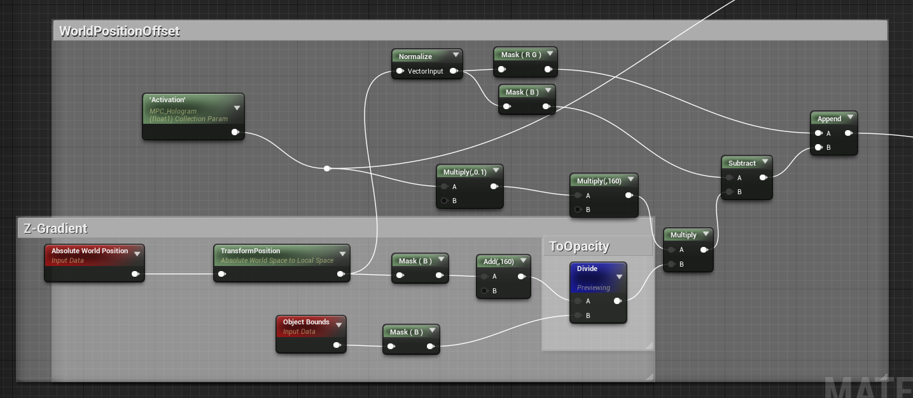
The result from the z-gradient drives the opacity and the result from the WorldPosition Math drives the scaling of the Mesh.
In this case when I generate the z-gradient I add 160(Height of the cylinder mesh) to the z-channel, this is so that the scaling happens within the scale of the base cylinder.
by sliding the value of Activation from 0 - 2 you will see the following result.
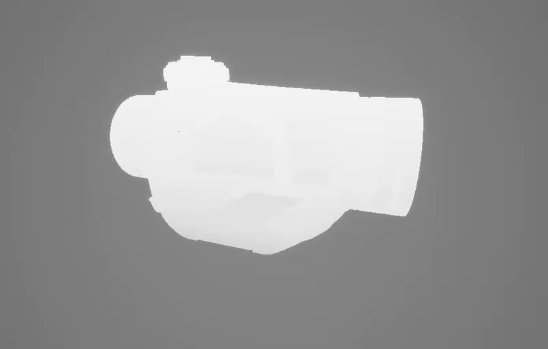
Turbulance
Note: The Rotation is handled in the BLueprint and is covered in the last section, doing the rotation in the shader resulted in some errors when doing the look development,because vertex normals weren’t recalculated for the fresnel. More on that later.
Next I add some math to create some turbulance.
The turbulance section is very similar to what was done in the previous shader, we generate some screen space noise, and use it to distort the WorldPosition of the mesh.
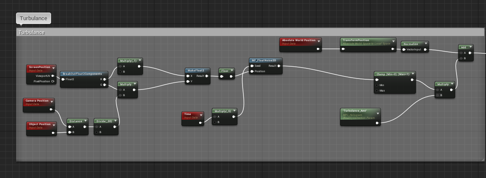
The Function MF_FloatNoise2D takes a vec2 and returns a psuedorandom float as the result.The node network for it is shown below.
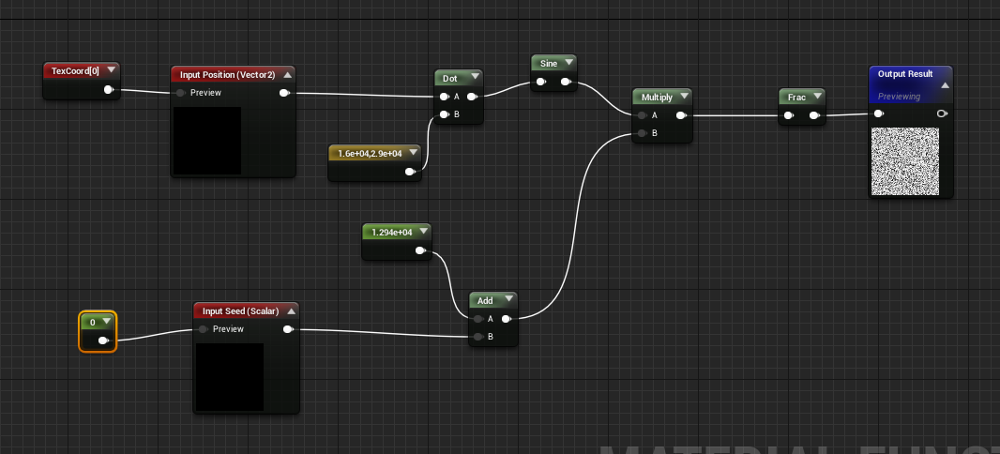
Screen Space Noise Visualized
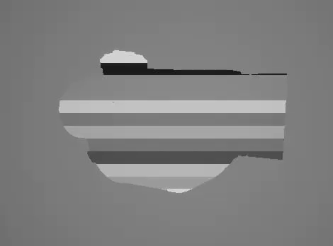
Wiring the result from this network into the WorldPositionoffset, will look like this, we also have the Turbulance_Amt parameter which can be used to animate/control the turbulance as shown below
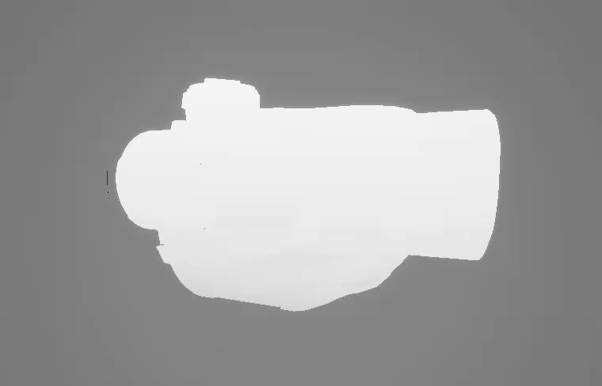
The result from the Turbulancesection and the initial z-gradient WorldPositonOffset result gets added together to give us the final output that get’s wired into the WorldPositionOffset input for the shader.
Now, we have a setup with parameters to control activation as well as turbulance
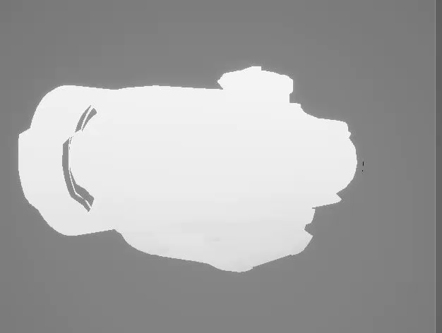
Look Development
This part is identical to what we did in the previous shader.
One thing we could have done here, is used the object’s baked Normal Map and used that to calculate the fresnel,this is nice because the baked normal gives us more surface details to work with, and thus results in a much more detailed fresnel, but I have avoided this here because I found it difficult to make this work with a re-usable Blueprint System, especially when sometimes meshes have multiple material ID’s with multiple normal maps. So for now we just stick to using the Vertex Normals.
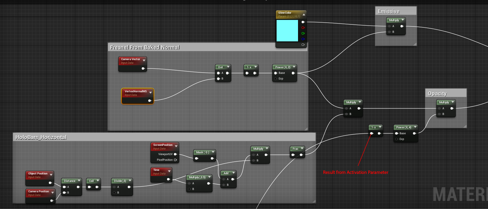
The results from these networks gives us our Emissive Color and our opacity outputs.Now we have a shader with parameters to control activation,turbulance and color.>As you can see below.

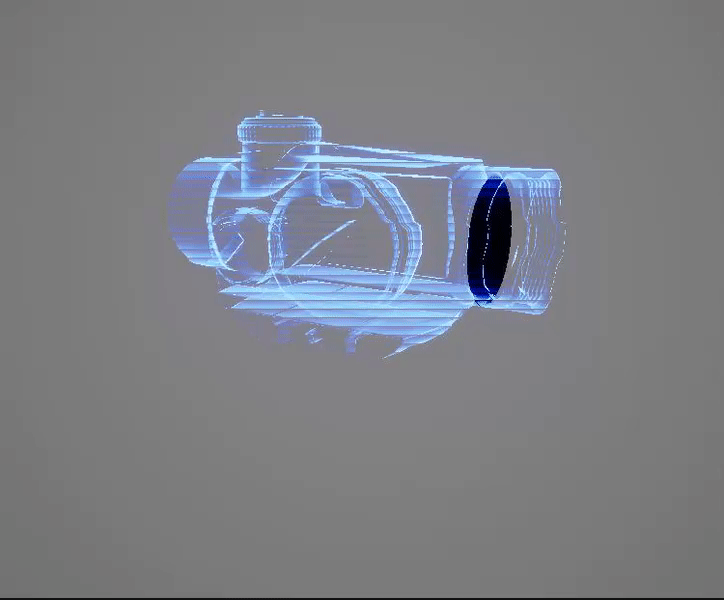


Put both meshes together in the scene and try tweaking the activation parameter in the MPC.

Encapsulating into a Blueprint
Now i just set up a simple blueprint for ease of use.
The BP has two parts, the construction script which handles bulk of the work, choosing meshes,materials,postioning etc and the Event Graph which will handle rotation during runtime.
Components and Variables
I expose certain variables, so that they can be tweaked in the editor
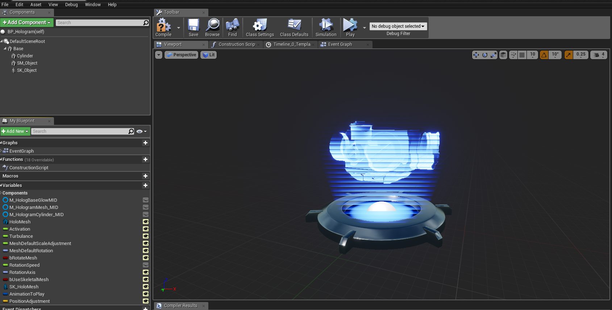
Construction Script
The first part of the construction script creates the Dynamic Material Instances and assigns the material to the Cylinder Mesh
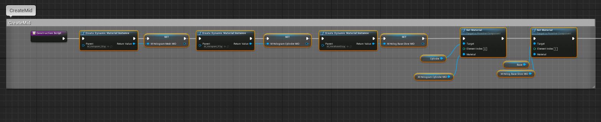
I wanted the BP to have the ability to pick between using a skeletal mesh with animation or a regular static mesh, the following sections set up the Mesh part
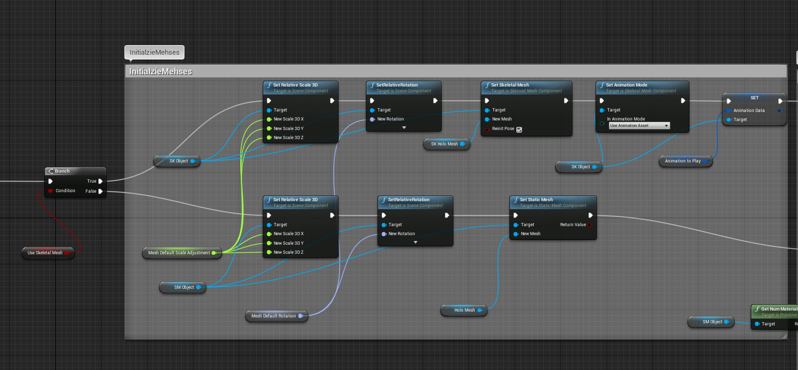
Continueing from the last section, sometimes meshes have multiple material id’s, so we use a For Loop to cycle through all the Material Indexes and assign the Hologram Material to Each Part
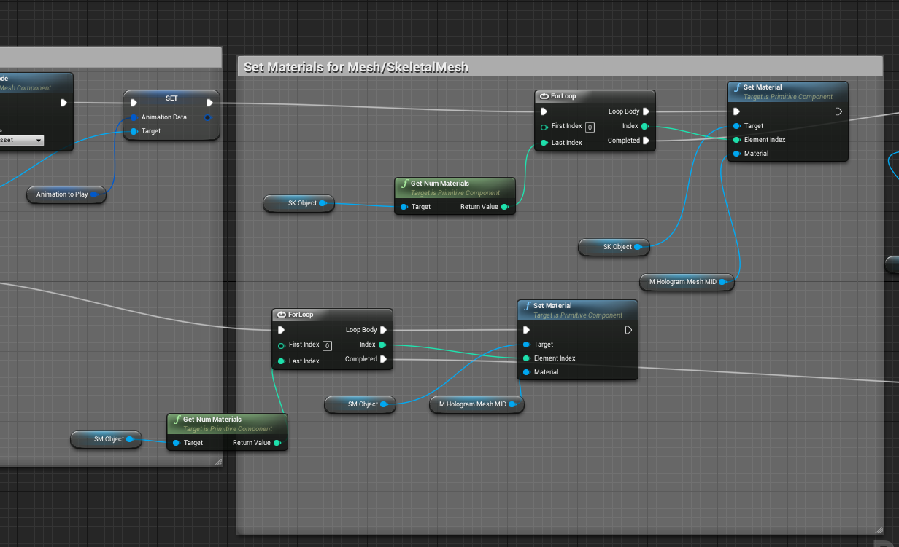
Objects tend to have pivot inconsistant pivot locations, so we have a parameter available so that we can compensate for any offsets manually. We also use the objectbounds to calculate the SpreadFactor that is fed into the cylinder’s Hologram Shader
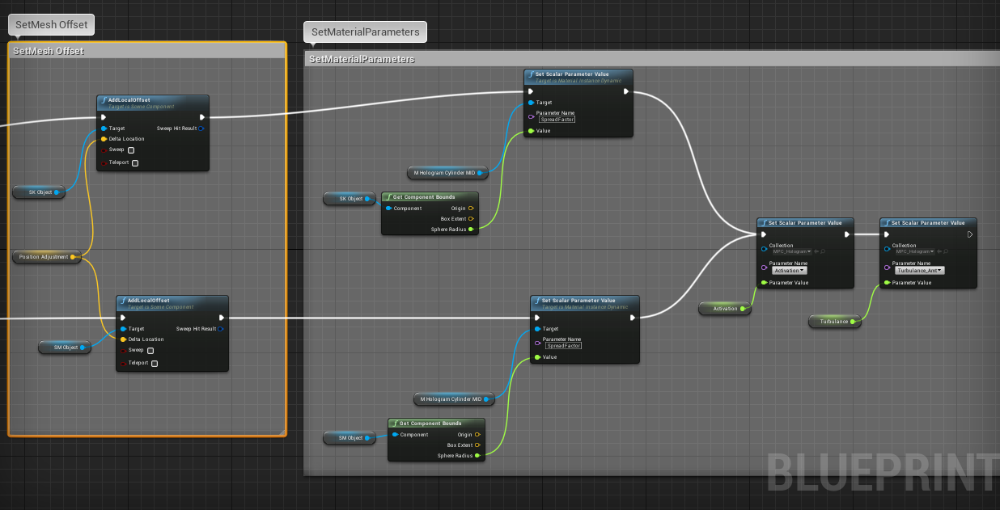
Event Graph
The event graph is only used if we enable mesh rotation, it is used to rotation the object at runtime.
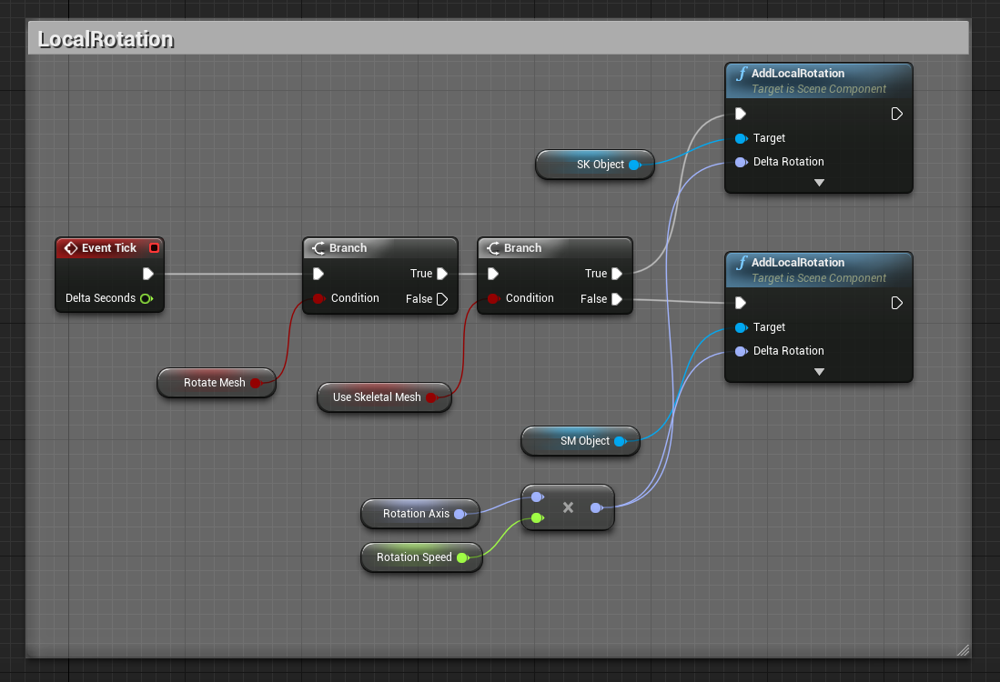
Now if we drop the Blueprint into the level and select it it should have all these parameters

Now we have a blueprint that we can use to assign any mesh we have to use in the hologram system, we can choose to use a skeletal mesh with animations or just a regular StaticMesh. As well as parameters to control activation,turbulance etc.


关于本文
本文作者 Master Gong Sheng, 许可由 CC BY-NC 4.0.